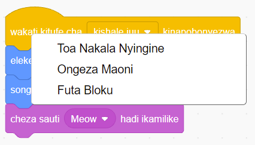
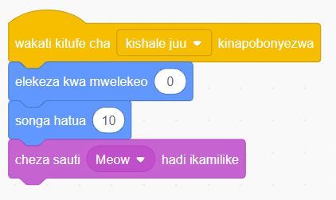
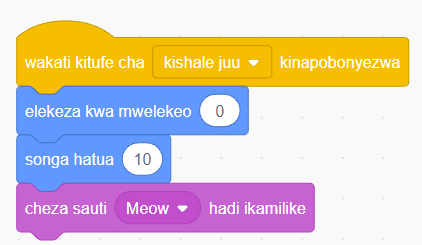

inavyoonekana katika Kielelezo namba 49.

Maelezo ya programu fikivu ya Quorum: Menyu ya Scratch au Quorum inaonyesha chaguo la Toa Nakala Nyingine, Ongeza Maoni, na Futa Bloku. Chaguo la Toa Nakala Nyingine ndilo la kunakili programu.Kielelezo namba 49: programu ya kumfanya ‘Sprite’ aende juu.
10. Chagua ‘Toa Nakala Nyingine’, kisha peleka kipanya upande wa chini na ubofye kitufe cha kushoto mara moja. Utakuwa umeunda program ya pili kwa kutoa nakala ya programu ya kwanza kama inavyoonekana katika Kielelezo namba 50.

Picha A. Maelezo ya programu fikivu ya Quorum: Programu ya Scratch au Quorum: kitufe cha kishale juu kinapobonyezwa, sprite huelekezwa kwa mwelekeo 0, husonga hatua 10, kisha hutoa sauti ya Meow hadi ikamilike.
Picha B. Maelezo ya programu fikivu ya Quorum: Nakala ya programu ya Scratch au Quorum yenye bloku zilezile: kitufe cha kishale juu kinapobonyezwa, sprite huelekezwa kwa mwelekeo 0, husonga hatua 10, kisha hutoa sauti ya Meow hadi ikamilike.Kielelezo namba 50: programu iliyotolewa nakala.